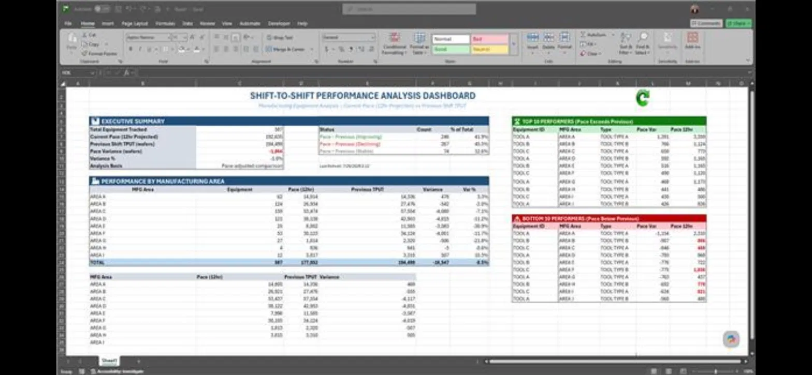
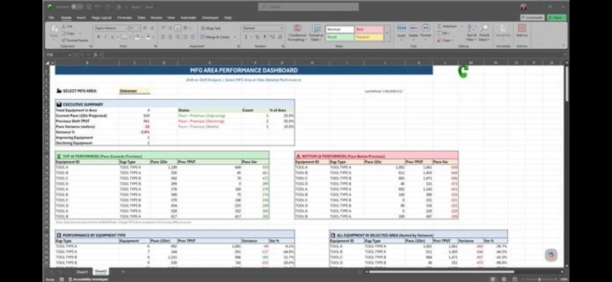

Delayed visibility
Available reports explained prior performance instead of surfacing emerging issues during the active shift.
What began as a basic shift comparison evolved into a decision-support workflow that helps manufacturing supervisors move from “something changed” to “here is where to investigate.”
Supervisors repeatedly needed to answer one operational question: “What happened last shift?”
Existing reports were primarily historical. They often described performance 12–24 hours after it occurred, which made them useful for reviewing the past but less useful for responding to the current shift. Supervisors had expressed a need for more immediate visibility for years, but no practical solution had been adopted within the existing reporting environment.
Rather than wait for a perfect enterprise solution, I built a practical one inside the workflow supervisors already used.
Available reports explained prior performance instead of surfacing emerging issues during the active shift.
Users had to filter, sort, and compare large equipment lists to determine where a performance gap originated.
The solution needed to work without new installations, specialized training, or unfamiliar technical dependencies.
The dashboard was not designed as a finished product in one attempt. Each version removed another layer of manual work from the user.
Created a simple table comparing tool type, equipment ID, current shift pace, previous shift pace, and the difference between them. Conditional formatting highlighted equipment performing more than 300 wafers above or below the previous shift.
Limitation: users still had to manually sort and interpret hundreds of rows to understand which manufacturing area was responsible for the overall gap.
Added an executive summary, overall projected shift pace, throughput by manufacturing area, and automatic rankings of the ten strongest and ten weakest equipment contributors.
This changed the experience from reading raw comparisons to quickly identifying where performance was improving or falling behind.
Added a selectable manufacturing-area view that surfaces the top and bottom toolsets, equipment-type performance, and the specific equipment IDs contributing most to the area’s shift variance.
Users unexpectedly valued this capability most because it allowed them to move directly from overall shift performance to a focused investigation inside their own area.
The interface follows the way supervisors naturally investigate an operational miss: begin with the shift, locate the area, then identify the equipment requiring attention.

Establish overall shift health and the size of the performance delta.
Locate which manufacturing areas are driving positive or negative variance.
Automatically surface the equipment most responsible for the change.
Direct supervisor attention toward the highest-priority operational misses.

The technical solution was deliberately simple enough to fit the operational environment while still refreshing live manufacturing data.
Although I had experience developing Python-based projects, Excel was already the accepted reporting environment for supervisors across the factory. Choosing a familiar platform eliminated installation, dependency, and training barriers and allowed the tool to fit directly into existing workflows.
The goal was not to use the most technically elaborate platform. The goal was to build something people could trust and use immediately.
The most time-consuming work was locating a source that refreshed frequently enough to support current-shift decision making. The report environment contained many historical sources but relatively few genuinely live feeds.
A second challenge was converting actual throughput into a projected 12-hour pace so users could make a fair comparison before the current shift had finished.
Before releasing the dashboard more broadly, I spent approximately two weeks collecting feedback from supervisors working on my shift.
Version 1 and Version 2 were positively received, but observation showed that the tool could still reduce more manual effort. Feedback from peers and recurring questions from my manager informed additional capabilities, including the manufacturing-area drill-down and more targeted equipment rankings.
On-shift supervisors tested early versions and helped identify where navigation and analysis could be simplified.
My manager remained involved throughout development and periodically requested additional views or metrics that were incorporated into later versions.
Visitors from another manufacturing site asked to review the tool, requested a copy, and explored adapting the concept for their own operation.
Visiting colleagues from another company site highlighted the project as an example of proactive problem solving: identifying a persistent need, taking ownership, and building a practical solution instead of waiting for one to arrive.
The project reinforced that successful internal tools depend as much on user behavior and trust as they do on formulas or data pipelines.
Finding the correct source and defining a credible projected pace mattered more than adding visual complexity.
A familiar Excel interface reduced friction and made the solution usable without requiring supervisors to understand Python, libraries, or deployment dependencies.
The area-level drill-down was not part of the initial concept, yet it became the most valued capability because it matched the way supervisors investigated problems.
Releasing a simple comparison early created feedback, momentum, and a clear path toward the more capable decision-support system.
A future version would move the product from current-state investigation toward proactive operational intelligence.
Notify supervisors when a tool or area develops a significant delta relative to the comparison shift.
Identify recurring degradation patterns rather than relying only on a single shift-to-shift comparison.
Preserve shift snapshots and compare current performance with similar shifts four or five days earlier.